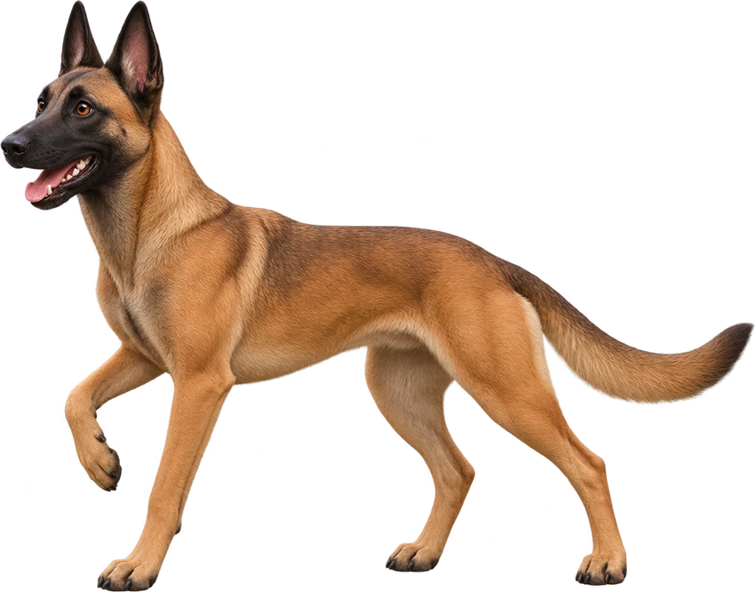

Come With Me Studio · Маленькі пригоди
Собачий аджиліті
Обери маршрут🐾 Перешкоди: 0 / 6



Пауза ☀
Обери свого песика
Обирай дію кнопкою. Можна подумати — ми зачекаємо.
Come With Me Studio · Маленькі пригоди

Обирай дію кнопкою. Можна подумати — ми зачекаємо.